单张定稿：三分之四视角 · 前侧上方 35° 俯视 · 主体占画幅 76% · 灰陶瓦 / 暖白墙 / 青灰石铺地
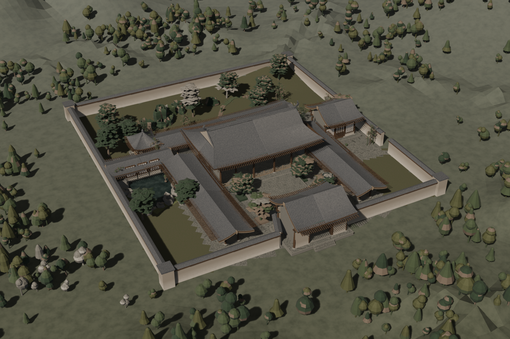
每轮先回看上轮出图再改脚本：共出图 17 次 / 改脚本 12 版。前六轮几乎都在填硬性缺陷，第七轮之后才转入外观打磨。
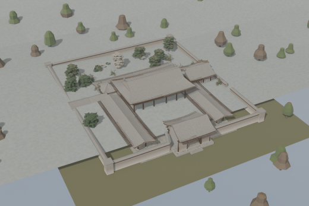
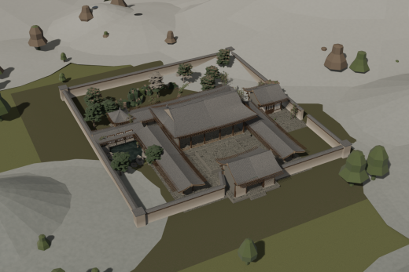
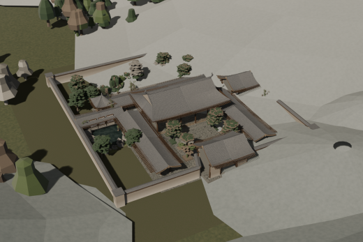
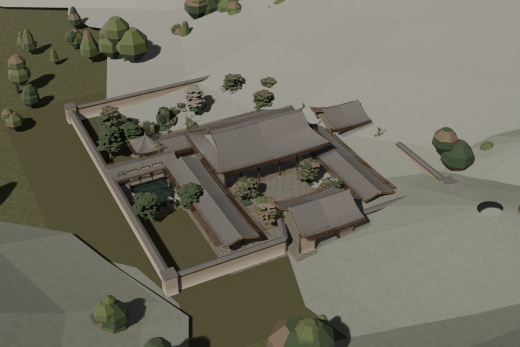
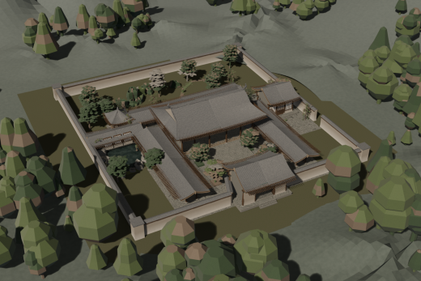
ground_z() 落位——此前被山体吞掉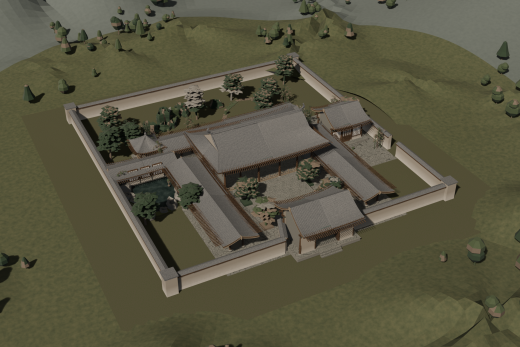
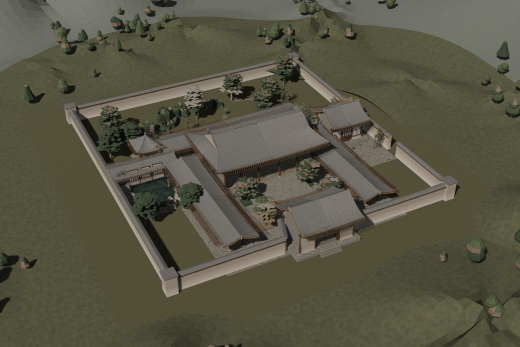
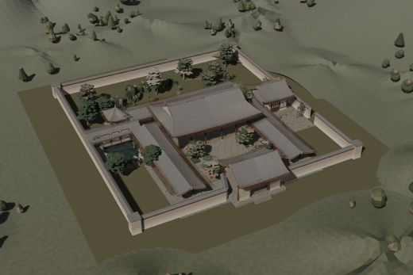
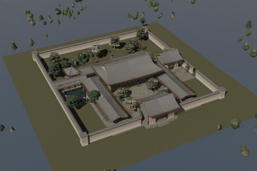
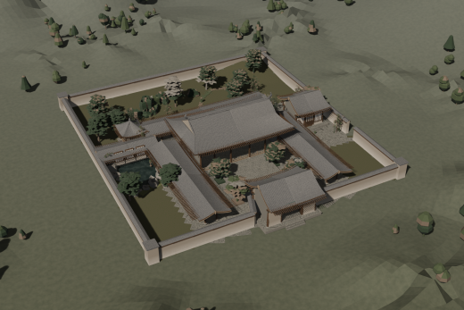
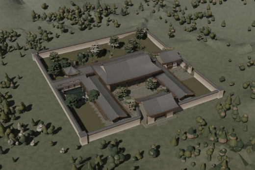
全部由脚本生成，无任何外部资产。以下几条是这轮里真正决定成败的地方。
SongRoof 用 (sy, u, τ) 参数化，
悬山 s=0 & break=1、庑殿 s=hd & break=1、歇山 s & break<1。
前坡 u=±1 边与撒头 w=±1 边在 σ=τ/break 处严格重合以保证曲面水密；
山花是同一曲面上 τ∈[break,1] 段的竖板。puzuo() 内部从栌斗起累加，初版直接把它当世界 z 用，
整座屋顶就掉到了 1.5 m——而俯视图里它看起来"只是矮了点"，靠埋点打印才发现。Camera Data → View Z Depth → Map Range → Mix 到雾色，
比体积雾可控且几乎零开销；体积雾只用来做分层。(-0.003) ** 1.38 返回 complex：屋面参数的 τ/σ 必须 clamp 到 [0,1]，
否则有限差分求法线时会抛 Vector() expected a number, found 'complex'。s[:s.index(A)] + new + s[s.index(B):]
在文件里已有重复函数时会把整段代码复制多份；而 str.replace(count=1) 只改第一份、
随后又被追加的副本覆盖，结果是"改了却没生效"。本次一度出现 3 份 terrain_z、3 份 build_ground。| 相机视角 | 三分之四视角，方位角 −27°、仰角 35°，50mm 等效；主体占画幅 76%（投影包围盒归一化后两阶段阻尼求解） |
|---|---|
| 渲染 | Eevee · 2200×1467 PNG · 192 spp · 光线追踪 + Fast GI · AgX · 体积雾分层 |
| 场地 | 院落 69 × 74 m，围墙内五路院落；地势由单一极坐标地形场给出（半径 0.75 → 390 m），外圈为平远丘陵与林地 |
| 中央大殿 | 五开间面阔 23.2 m、进深 12.8 m，檐柱高 5.2 m；单檐歇山顶九脊，收山 2.35 m，屋面在举高 56% 处转折长出山花板 |
| 斗拱 | 材份制：材广 0.21 m = 15 份；栌斗 / 华拱 / 双下昂 / 泥道拱 / 瓜子拱 / 令拱 / 交互斗 / 散斗 / 耍头 / 撩檐方逐件生成，六铺作总高约 2.23 m，出跳 1.80 m |
| 屋面 | 举折曲面 z = 檐口 + 举高·τ^1.38；翼角起翘按 |u|³ 抬起 0.72 m + 平面外凸 0.36 m；筒瓦垄为真几何，正脊两端为宋式鸱尾；檐下深出檐 2.72 m，露檐椽与飞子 |
| 其余建筑 | 山门（悬山顶 / 板门内开 / 直棂窗）、东侧书院（三开间悬山顶）、临水茶亭（攒尖顶 + 宝顶）、两道廊庑与后廊（一斗三升）、廊桥、带瓦顶压顶的围墙与角柱 |
| 长物与植栽 | 甬道与牙子石、树池、石缸、石灯、太湖石（环面 + 噪声位移，天然带「透」孔）、松 / 竹 / 假山、溪流 |
| 材质 | 21 种全部为程序化节点：灰陶瓦、深色原木、暖白石灰墙、青灰石铺地、静水、苔痕、远山雾化等，无一张贴图 |
| 规模 | 451,625 面 / 579,366 顶点 · 14 个对象 · 单文件脚本 3729 行 / 97 个函数 · 共出图 17 次 |
建模脚本可直接下载复用。13.6 MB 的 .blend 工程文件未随仓库分发 —— 脚本在 --factory-startup 下可完整复现。